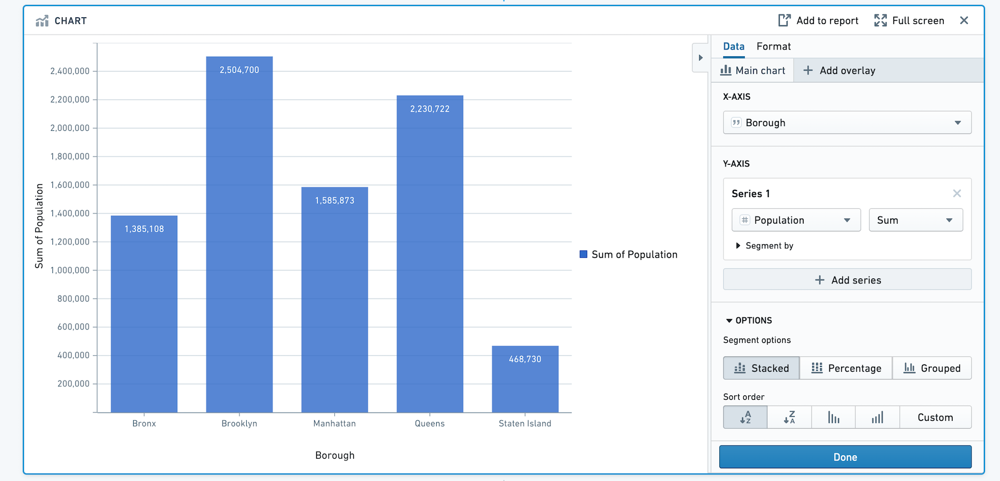
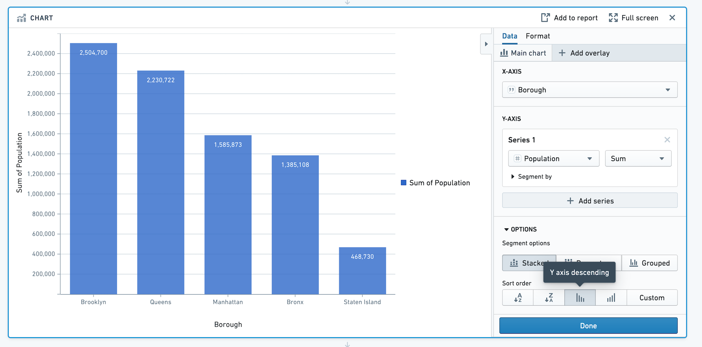
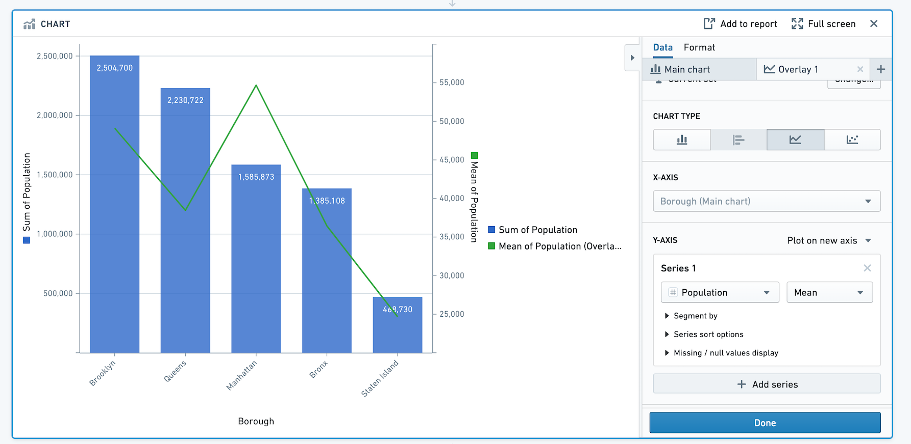
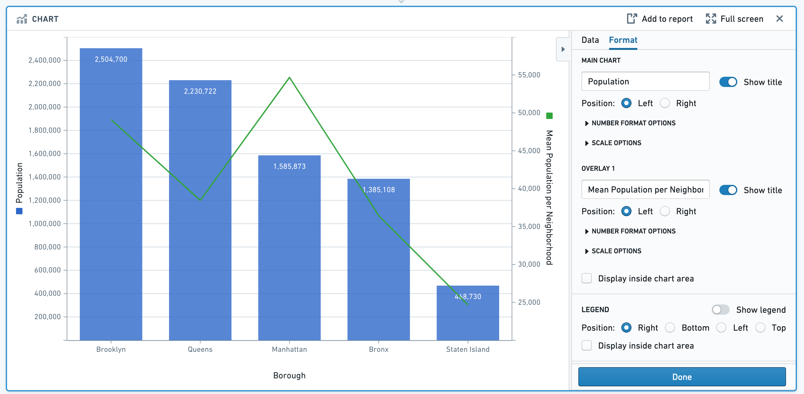
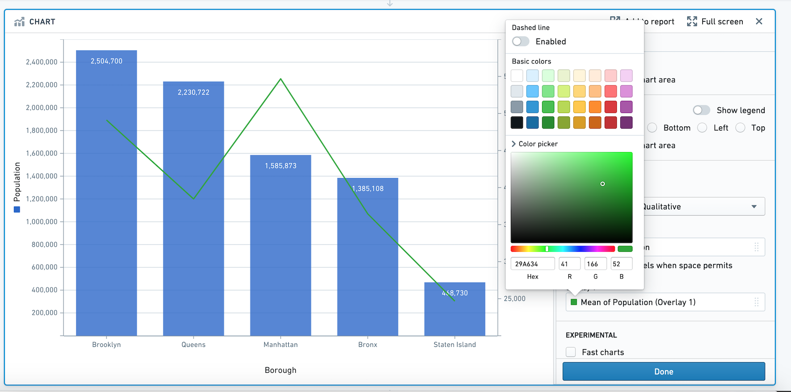
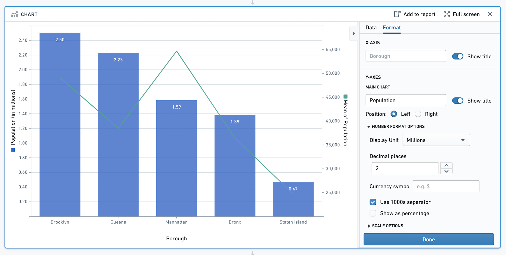
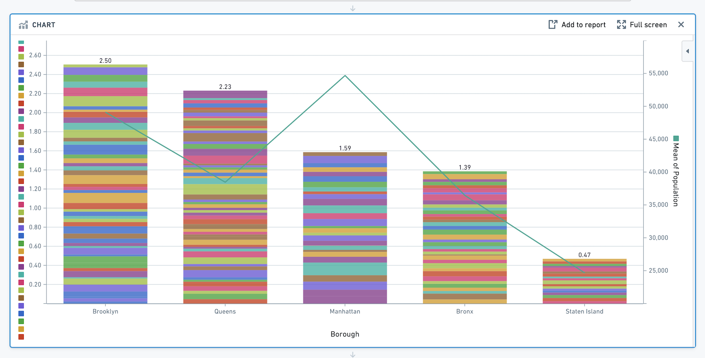
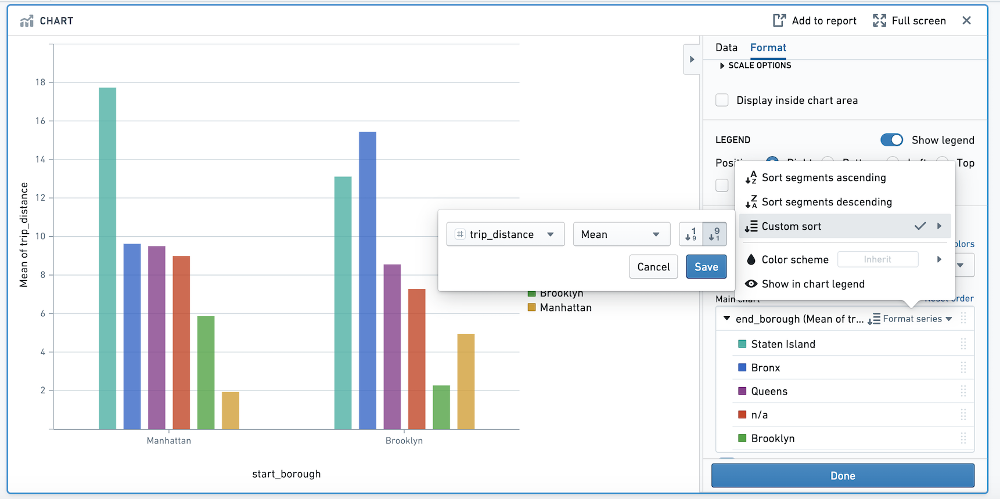
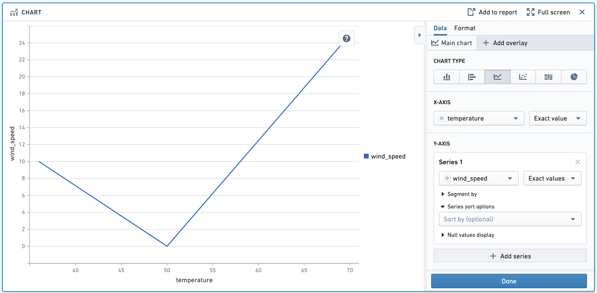
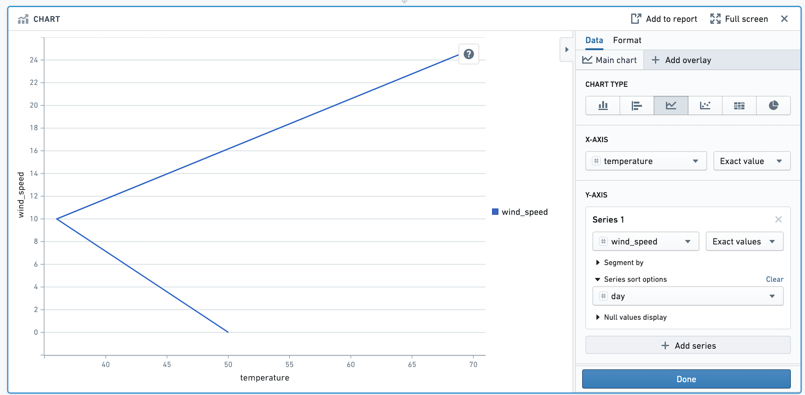

This tutorial walks through how you can use Contour to go from a spreadsheet of raw data to charts that reveal insights into the data.
This tutorial uses data about neighborhoods in New York City from the 2010 U.S. Census â. Follow along with this sample dataset: Download nyc_population_by_neighborhood dataset
Each row in the dataset is a neighborhood in New York City, with information about its Borough, Population, NTA_Name (neighborhood name), and FIPS_County_Code (county code).
After downloading this dataset, drag and drop it into Foundry to create a dataset. Then, click Analyze to start a Contour analysis.
First, we will visualize the population in each borough of New York City. We can do this by adding a bar chart with X-axis Borough, and Y-axis the sum of Population.

To sort the bars in descending order of population, scroll to Options and choose Y axis descending for Sort Order.

In addition to information about total population of the borough, you can overlay the average population in each neighborhood as a line. This provides a sense of population density in the boroughs.
Add an overlay by clicking + Add overlay and selecting a line chart. You can plot this line chart on a new axis.

Based on this chart we can see that although Manhattan has the third highest population out of the five boroughs, the mean population per neighborhood in Manhattan is about 55,000 people per neighborhood which is more than any other borough.
Now that we have created the chart, we can change the titles, colors, and number formatting.
Click on the Format tab. Change the left Y-axis title from Sum of Population to Population, and the right Y-axis title from Mean of Population to Mean of Population per Neighborhood. Then, toggle off the legend. In this section, you can also choose Number Format options and Scale options.

Next, use the color picker to choose a different color for the overlay line. Click on the green square below the label Overlay 1, and expand the color picker section. In this popover, you can also choose to make the line dashed.

Next, change the Display Units on the Y-axis. The goal is to view the population per Borough in millions. In the format tab under Number Format Options, change the Display Unit to Millions and specify 2 decimal places. After recomputing, note that the Y-axis title is now "Population (in millions)". This is only a formatting change: all underlying data remains the same.

We want to investigate the specific neighborhoods that make up each borough's population. To view the population for each neighborhood and see how it contributes toward the sum for its borough, add the neighborhood as a segment in the Main Chart tab. Your chart will now look like this:

Congratulations - you have successfully made a chart using Contour.
Note that only the main chart layer is part of the data path. The other layers are solely for presentation purposes. In other words, making a selection or otherwise manipulating the data on an overlay layer will not affect the data downstream in your path.
When you have segmented your series, you can reorder the segments in the series in the Format tab. Scroll down and click on the Format Series popover. You can choose to sort the segments in ascending or descending order, or a custom sort based on another column. Or, use the drag handles next to each segment name to manually reorder them.
In the below image, we are visualizing the average trip distance for taxi trips between the start_borough of a taxi trip, and the end_borough. In the example, the segments (end_borough) are sorted by the average trip distance so that the end_borough with the highest average trip distance appears to the left.

You may want to control the order in which points in your line chart are plotted. For example, imagine we want to plot the temperature and wind speed at a location over time. Our data looks as below:
| day | temperature | wind_speed |
|---|---|---|
| 1 | 50 | 0 |
| 2 | 36 | 10 |
| 3 | 70 | 25 |
Make a line chart with temperature on the X-axis and wind speed on the Y-axis.

Above, the points are drawn from left to right. We want the points to be drawn in chronological order. To do that, add day in the Series Sort Options.

The points in this chart are now drawn in order of day.